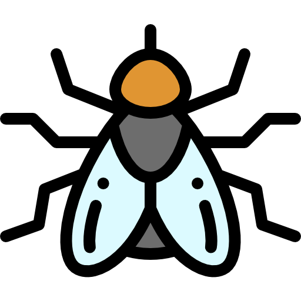
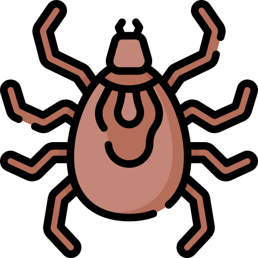
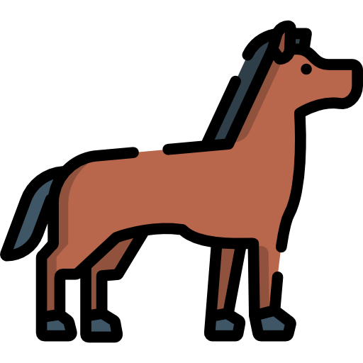

SERES VIVOS SEM PARTES OU ÓRGÃOS
MACRÓFITAS submersas requerem polinização
 |
Muitas macrofitas aquáticas do gênero Elodea passam todo seu ciclo de vida submersas na água. Porém, para se reproduzir, a planta precisa fazer um gasto energético para a produção de flores carpeladas à partir de estolhos submersos de modo que as mesmas acabem emergindo para que haja a polinização. Como a reprodução sexuada por polinização é ineficaz, a propagação destas macrofitas se dá mais frequentemente pela fragmentação de rizomas, pois mesmo sem raíz, as partes desenraizadas mantêm-se vivas por longo tempo, podendo enraizar reproduzindo assexuadamente. |
|---|
MARIPOSAS que não possuem boca
| As mariposas-da-lua adultas (Actias luna) não possuem boca e vivem apenas cerca de sete dias. Essas mariposas não se alimentam em sua fase adulta, porém, uma única fêmea pode produzir várias centenas de ovos durante os sete dias antes de morrer de fome. Para resistir tal tempo se alimentação, as mariposas usam das reservas que acumularam enquanto eram lagartas. Muitas não conseguem se reproduzir antes de morrerem de fome. |  |
|---|
MOSCAS que não possuem boca
|  | A Dermatobia hominis é uma mosca da família Cuterebridae popularmente conhecida no Brasil como mosca-berneira. Essa espécie não possui peças bucais (assim como também é o caso de outras moscas estroides). Por conta de seu aparelho bucal atrofiado e não funcional, as moscas adultas não se alimentam e, durante essa fase que dura 7 dias, os indívíduos de utilizam suas reservas para reprodução e depois morrem de fome. |
|---|
ÁCAROS que não possuem ânus
| Ácaros do gênero Demodex como o D. folliculorum são adaptados para viverem dentro dos folículos capilares e, portanto, são finos e semelhante a um verme, com pernas curtas. Todo o ciclo de vida da espécie D. folliculorum leva de 14 a 16 dias, sendo sete dias para a larva se desenvolver em um adulto maduro, com dois estágios de ninfas intervenientes, e 4 a 6 dias de vida na fase adulta. Apesar de D. folliculorum possuírem um intestino rudimentar, eles não possuem ânus. Sem o ânus, esses ácaros não defecam e acabam acumulando escórias dentro do seu corpo até explodirem. |  |
|---|
CAVALOS não possuem o centro de vômito
|  | O cavalo não possui o centro de vômito localizado na formação reticular da medula onde localiza-se os comandos do vômito. Sem esse centro de vômito, o cárdia que controla os alimentos que passam para a entrada do estômago não abre para que ocorra a regurgitação do alimento. Por conta dessa questão fisiológica, o cavalo não consegue vomitar, necessitando de lavagens estomacais e intestinais para a cólica. Nessa circunstância, os cavalos podem morrer caso não haja o esvaziamento do estômago, pois a cólica é a doença que mais mata cavalos e deve ser tratada com rapidez. |
|---|
PLANTAS que colocam frutos sem sementes
| Alguns grupos de plantas possuem frutos partenocárpicos. Por definição, frutos partenocárpicos são aqueles onde os rudimentos seminais não se transformam em sementes ou quando formam sementes, estas são estéreis. Espécies brasileiras como a Lophogyne lacunosa são partenocárpicas: a L. lacunosa apresenta um fruto com 3,03 mm (± 0,43) X 1,5 mm (± 0,23) e seis costelas, porém, desprovido de sementes. Além do gênero Lophogyne, frutos partenocárpicos ocorrem também nos gêneros Mourera e Podostemum. | |
|---|
CAVALOS possuem somente um dedo
| Cavalos primitivos como o Eohippus possuíam quatro dedos nas patas dianteiras e três em cada pata traseira. Ao longo dos anos, os animais descendentes deram origem à cavalos de um dedo só (como o Pliohippus), que eram animais adaptados para desenvolver maior velocidade em descampados para fugir dos predadores. Esses espécimes monodáctilos deram origem ao Equus moderno, cuja estrutura de pata é formada pelos ossos do dedo central e cuja unha forma o casco. O problema é que ao pisar sobre um único dedo, cavalos podem desenvolver laminite com facilidade, sem ter outro dedo para pisar, o cavalo adoece e morre. |
BESOUROS sem a abertura nos élitros
| Muitas espécies de besouros não voam (como os gorgulhos do gênero Lucanidae e o Apterocyclus honolulensis) — eles retêm asas perfeitamente formadas, alojadas sob os élitros. Contudo, essas tampas das asas estão fundidas, fazendo com que esses seres não consigam abrir os élitros para colocar as asas pra fora e voar. Assim, os besouros possuem asas completas e funcionais, mas por não possuírem a abertura para liberar esses apêndices nunca poderão usa-los para voo. Todos os exemplos desse tipo podem ser explicados em termos de perda de funções que estavam presentes nos ancestrais, conduzindo à vestigialidade. |  |
|---|
Cacho da BANANEIRA dentro da planta
 |
A bananeira é uma planta composta por um caule que é subterrâneo e modificado (rizoma). O que fica acima do solo é, na verdade, um falso tronco formado pela junção dos pecíolos das folhas (bainhas das folhas superpostas). Somente quando a planta está pronta para florescer é que uma extensão do verdadeiro caule, com uma espiga terminal na ponta, cresce por dentro da bainha do pseudocaule até sair e continua crescendo para baixo onde surgem as bananas. Acontece que, muitas vezes esse caule não cresce até sair de dentro da planta, as bananas surgem ainda dentro do falso tronco e não são expulsas. |
|---|